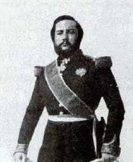

http://i-sergeev.livejournal.com/116938.html
i_sergeev
Парагвай или Как все начиналось
В связи с агрессией НАТО в Ливии в последнее время нередко вспоминают другую страну, Парагвай. Вспомним и мы, с чего все начиналось.
Уничтожение первого в мире социалистического государства закончилось самым чудовищным геноцидом за всю историю человечества.
Для начала перечислим факты и попробуем догадаться, о какой стране идет речь:
Вся власть в стране принадлежит государству, которое последовательно проводит курс на построение полностью самостоятельной, самодостаточной экономики, опирающейся исключительно на собственные ресурсы при минимальном импорте.
Вытеснив национальную буржуазию из экономической и политической сфер, государство взяло на себя исключительную роль формирования и развития нации, распределения национальных доходов.
Страна не имеет внешних долгов. Вся внешняя торговля находится в государственной монополии. При этом экспорт стабильно превышает импорт, что позволяет делать крупные капиталовложения в промышленность и сельское хозяйство, не прибегая к иностранным займам.
Вместо иностранных капиталов государство привлекает зарубежных (европейских) специалистов, которые получают хорошую зарплату и помогают налаживать передовые, высокотехнологичные производства, транспортную и коммуникационную инфраструктуры.
Государство проводит жесткую протекционистскую политику, поддерживая отечественных производителей (путем введения высоких импортных пошлин и одновременного снижения экспортных пошлин).
Национальная валюта полностью стабильна.
В стране налажена современная телеграфная связь, железнодорожное сообщение, речной транспорт.
Благодаря государственной поддержке в стране происходит мощный экономический подъем, строятся новые производства сталелитейной, текстильной, бумажной, типографской промышленности, кораблестроения.
Ирригационные работы, строительство плотин и каналов, новых мостов и дорог способствуют подъему сельскохозяйственного производства.
В стране полностью побеждена неграмотность - практически все население страны умеет читать и писать. Бесплатное образование (всеобщее обязательное начальное образование), бесплатная медицина.
98% территории страны составляет общественную собственность: государство предоставляет крестьянам наделы земли в бессрочное пользование за символическую арендную плату в обмен на обязательство обрабатывать эти участки, без права продажи.
Наряду с частными сельхозпроизводителями действуют крупные государственные сельскохозяйственные и скотоводческие хозяйства - «поместья Родины».
В стране установлен потолок цен на основные продукты питания.
Это единственная страна на континенте, не знающая нищеты, голода, коррупции. Практически отсутствует преступность.
Все доходы страны направляются на проведение индустриализации, поддержку сельского хозяйства, развитие социальной сферы и модернизацию армии. В стране отсутствуют коммерческие посредники, спекулянты, паразитические классы и прослойки.
Ну что же, нормальный социализм образца СССР 1930-х годов.
Казалось бы, ничего особенного. Но удивительно другое, а именно, историческая эпоха – все это происходит в начале 1860-х годов!
О Господи, что же это за страна, обогнавшая на семьдесят лет даже Россию, где подобное стало возможным только в эпоху Сталинских пятилеток, не говоря уже об остальном мире! Где это?
В Южной Америке. Да, да, в Южной Америке. И страна эта - Парагвай.
Неужели тот самый Парагвай, одна из самых отсталых, нищих и
убогих стран мира, начисто вычеркнутая из мировой политики, где-то на задворках
мира, о которой никто не знает ничего толком!
Не знает. А напрасно. В середине 19-го века Парагвай – самое обеспеченное,
передовое и успешное государство Латинской Америки. И добавим, самое
независимое.
Хосе Франсия, первый президент Парагвая, пришедший к власти в 1814 году, и последующие президенты Карлос Антонио Лопес и Франсиско Солано Лопес (1862–1870) подарили нации мечту, и эта мечта стала сбываться на глазах!
Было от чего всполошиться Британии.
Ведь тем самым Парагвай противопоставил себя мировому империализму, в первую очередь, английскому капиталу.
Мало того, Франсиско Солано Лопес запретил английским торговым судам вход в реку Парагвай, а это уже прямое покушение на святая святых – Мировой порядок, установленный Британской империей, согласно которому все обязаны были покупать английские товары.
А если нет, то война (как было, например, в Китае, вспомним «опиумные войны»)!
Все социальные и экономические завоевания Парагвая были достигнуты без участия мирового капитала, с опорой только на собственные, национальные ресурсы.
Это был пример.Пример для подражания.
Такой же пример представлял собой Советский Союз. И поэтому должен был быть уничтожен.
В наши дни такой же пример являла миру Ливийская Джамахирия. И
поэтому должна была быть уничтожена.
С тем же остервенением сегодня пытаются уничтожить и Белоруссию, а завтра будут
уничтожать Иран.
И Британия принимается за дело. Механизм интриг бешено заработал.
Надо сказать, что политика Бразилии и Аргентины в то время вполне контролировалась Великобританией.
ООб английском влиянии в Бразилии говорят хотя бы недвусмысленные инструкции министра иностранных дел, лорда Каннинга послу Британской империи, лорду Стренгфорду: «Превратить Бразилию в основную базу для реализации продукции английских мануфактур в Латинской Америке».
Аргентину же и вовсе называли «британским доминионом». Накануне войны английский министр Эдвард Торнтон открыто присутствовал в качестве советника на заседаниях правительственного кабинета в Буэнос-Айресе, восседая рядом с президентом Бартоломе Митре.
Время от времени Британия стравливала эти две страны между собой по принципу «разделяй и властвуй», но на этот раз потребовалось объединить все силы региона Ла-Платы, чтобы уничтожить страшного врага – социализм.
Итак, в 1864 году Бразилия, заручившись поддержкой Аргентины, вторгается в Уругвай и смещает правительство этой страны. Столица Уругвая Монтевидео – единственный выход для Парагвая к океану, без которого смерть. Замок защелкнулся.
Единственный козырь в руках Солано Лопеса – армия. Ничего не остается, как использовать его.
И Франсиско Солано Лопес объявляет войну всему миру – Бразилии и Аргентине. В Уругвае, на помощь которому бросился Солано, уже посажено марионеточное правительство, которое в общей упряжке объявляет войну Парагваю.
По существу Солано Лопес объявляет войну только одной стране – Англии и в ее лице всей мировой системе капитализма. И не потому что надеется на победу, а потому что ничего другого у него не остается. У него есть только армия, лучшая на континенте.
Да, да, страна, не позаимствовавшая ни единого пенни у мирового капитала, опираясь исключительно на собственные силы, сумела не только создать передовую экономику и социальную защиту, почти на столетие опередившую свое время, но и создать и содержать лучшую армию на континенте!
Поначалу военный успех на стороне Парагвая. Но со временем сказывается недостаток ресурсов, в первую очередь людских.
Между тем армия «демократизаторов» непрерывным потоком снабжалась из Европы самым современным вооружением и техникой. Парагвай же был отрезан от моря и не мог получить даже собственное, заказанное в Европе накануне войны вооружение (которое тут же перепродали Бразилии!).
Народ Парагвая был готов вместе со своим президентом до конца защищать свою родину. Но в армии, как водится (как было и в сталинскую эпоху, мы знаем) не обошлось без заговора. Генерал Эстигаррибия оказался изменником (попросту был подкуплен), завел лучшую часть армии в окружение и сдался без боя.
В 1866 году оккупанты вторглись в пределы Парагвая. И завязли в героическом сопротивлении всего народа.
Мучительно медленно они продвигались к столице страны Асунсьону, не взламывая оборону, а именно продавливая ее, уничтожая все на своем пути. Парагвайцы не сдавались в плен и не оставляли свои позиции, которые можно было захватить только после того, как все до одного защитники будут убиты.
Не меньшее сопротивление оказали мирные жители, массово взявшиеся за оружие. Каждую деревню, каждый населенный пункт приходилось брать штурмом, после чего всех оставшихся жителей вырезали, включая детей.
В 1870 году все было кончено. Президент Франсиско Солано Лопес погиб в бою, сражаясь с последним отрядом своей армии.
Итоги. Парагвайская нация практически полностью уничтожена. Истреблено более 90% мужского населения, включая детей и стариков.
По другим данным, картина еще более чудовищная. Истреблено почти 90% ВСЕГО НАСЕЛЕНИЯ, сократившегося с 1 млн. 400 тысяч до 200 тысяч человек, из которых мужчин осталось не более 28 тысяч!
Таких масштабов геноцида никогда не было, ни в одной стране, за всю историю человечества.
Практически все население Парагвая уничтожено (убивали всех поголовно, чтобы не осталось даже памяти о социализме!). Разрушена промышленность, ликвидированы все социальные блага. Страна отдана на бесконтрольное и ничем не ограниченное разграбление.
С тех пор прошло сто пятьдесят лет, и ничто не изменилось и не изменится уже. Парагвай навсегда попал в разряд стран-изгоев.
А был самой передовой, экономически развитой и успешной страной на континенте, провозвестником Сталинского Советского Союза (разумеется, в миниатюре, и все же!).
Впрочем «победители» ничего не выиграли от своих преступлений. Территориальные приобретения Аргентины и Бразилии не смогли компенсировать и малую толику тех гигантских долгов, в которые им пришлось влезть для ведения этой первой в истории ТОТАЛЬНОЙ ВОЙНЫ.
Война против Парагвая от начала до конца финансировалась английским еврейским банковским капиталом (кто бы сомневался!) - Лондонским банком, банкирским домом «Бэринг бразерс» и банками Ротшильда на условиях, которые почти на сто лет закабалили страны-«победительницы».
Все. Мышеловка захлопнулась.
Одна страна уничтожена полностью, со всей населявшей ее нацией, две другие страны оказались в рабстве у английских (еврейских) банкиров, ну, а об Уругвае никто уже больше не вспоминал. Теперь Уругвай, ставший поводом для уничтожения социализма Солано Лопеса - такое же никчемное пятно на глобусе, как и нынешний Парагвай.
 |
| Последняя фотография Франсиско Солано Лопеса 1870 г. |
Парагвайская война была первым опытом общечеловеков по наведению демократии в отдельно взятом независимом государстве. Со всеми атрибутами, которые они используют и по сей день – информационная война, демагогия, геноцид.
Но это был и первый опыт невиданного по накалу и ярости сопротивления захватчикам. Ни в одной стране мира до этого ТАК не воевали.
Отсюда и столько погибших.
За тиранов так не сражаются. Так сражаются ЗА ИДЕЮ, ЗА МЕЧТУ.
С таким же ожесточением сражались советские солдаты, поднимаясь в атаку «За Родину! За Сталина!»
Это с одной стороны.
А с другой - методичное уничтожение ВСЕГО НАСЕЛЕНИЯ по принципу выжженной земли, через восемьдесят лет примененному нацистами в России.
Чтобы даже памяти не оставить.
Там о Солано, здесь о Сталине (со Сталиным, правда, не получилось!)
В итоге первое на Земле социалистическое государство было уничтожено. Чтобы другим не повадно было.
Причем не просто уничтожено, а буквально стерто с лица земли. Две другие страны – Бразилия и Аргентина – почти на столетие попали в долговое рабство к Британии. Они и так находились в полной экономической и политической зависимости, но теперь их удалось закабалить еще более надежно и тем самым многократно увеличить эксплуатацию этих полуколоний.
Бразилия смогла рассчитаться с долгами за Парагвайскую войну только при Жетулио Варгасе в 1940-х, а в Аргентине покончить с безраздельным господством англичан удалось только Хуану Доминго Перону в тех же 40-х годах ХХ века.
Для мирового капитализма в лице Британии все получилось как
нельзя лучше. Правда, для этого пришлось почти полностью вырезать целую нацию –
население целой страны. Но для английского капитала это сущие пустяки!
Но память не уничтожить!
А значит, жива и надежда и Продолжение следует!
19/10/2011